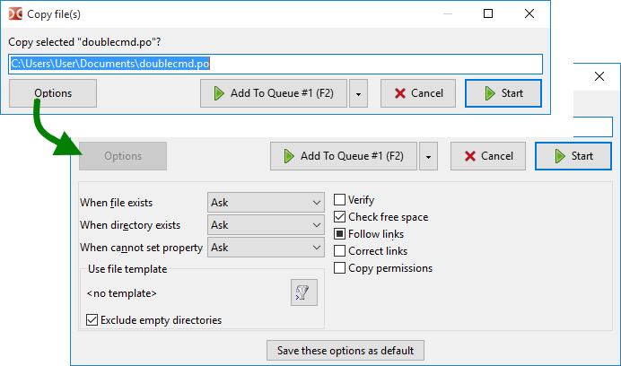

Confirmation window for copying or moving files with the ability to change some parameters. This windows for both operations differ in only a few parameters, so they will be described together.

Can be called with the F5 (copy), Shift+F5 (copy in the same directory) and F6 (move) keys, with buttons on the function key buttons bar or with internal commands (cm_Copy, cm_CopySamePanel and cm_Rename). Also this dialog window appears when we drag and drop files (if Show confirmation dialog after drop is enabled).
The window displays an editable field with the target directory and a file mask (or a file name, if only one), we can manually change the target path and file name. With F5 or F6 we can toggle the selection in the following order: base file name, file name, extension, path, all. If the target directory is not specified (cm_CopySamePanel or manual editing), the files will be copied to the source directory.
File mask determines how files will be renamed when copying or moving (symbol "*" means match any number of characters, symbol "?" means any one character). For example, we can specify *.*.bak, to add an extension .bak to all copied files. Using *.ext, we can replace the extensions of all copied files with ext. Or, for example, use ????.* and trim the names to the first four characters. Symbols before *.* replaces symbols in the name (starting from the first symbol). If the mask is not applicable, the names will remain as is.
Several buttons:
Start and Cancel – start or cancel the operation.
Add To Queue – adds a task to the queue of file operations. This is convenient if we have several tasks running at the same time: we can change the order of operations in the queue, stop or pause a task. The window with the list of file operations can be called in two ways: use the Operations Viewer item in the Show menu or Alt+V (internal command cm_OperationsViewer).
Options – expands additional options.
The first group of options determine the action to be taken when resolving a name conflict or when it is impossible to set file properties:
When file exists – If a file with the same name already exists in the target directory. Actions: Ask, Overwrite, Overwrite Older, Skip.
When directory exists – If a folder with the same name already exists in the target directory. Actions: Ask, Merge, Skip.
When cannot set property – What to do when cannot set file time, attributes, etc., for example, due to file system limitations in the target directory. Actions: Ask, Don't set anymore, Ignore errors.
Ask (by default) provides more possible actions (see below).
The next group is a filter, the ability to specify which files to copy or move (file masks, age and so on). Here we can see the selected template and:
The Choose template button ( ) opens a window with a list of saved templates and with the ability to add a new one.
) opens a window with a list of saved templates and with the ability to add a new one.
Exclude empty directories – If enabled, only non-empty directories will be copied or moved. Works only with templates.
The list of the following parameters will vary depending on the type of file operation and operating system family.
Verify – If enabled, Double Commander will compare the source file and the copied file in the target directory: a byte-by-byte comparison (Windows) or BLAKE2 checksums (Linux and others). Double Commander will try to minimize the disk cache effects (if the file system does not support direct input/output, the program will report the verification failure). Keep in mind, this function significantly reduces the speed of the operation. Please note that each file will be read twice, so the total size of files in the progress bar will be doubled. Not available in macOS.
Check free space – Before copying the file, Double Commander will check if there is enough free disk space in the target directory.
Reserve space – If enabled, Double Commander will use pre-allocation of disk space, this will reduce the chances of file fragmentation. Also this is a faster way to create files. In Windows, Double Commander always reserves space. Does not work in Linux on partitions with FAT32 file system.
Follow links – If enabled, Double Commander will consider symbolic links to folders as regular folders and copy their contents; instead of file links, the target files of this links will be copied. The indeterminate checkbox state (three-state): the program will ask each time what it should do.
Correct links – If enabled, Double Commander will check the links and, if necessary, correct their target path based on the target directory. If a relative path is specified, then the corrected path will also be written as relative.
Copy attributes – If enabled, the attributes of the source file will be copied, otherwise, the default values for the current user will be used, usually 664 (files) or 775 (folders). Also see description of <CopyXattributes>. For Windows: see description of <CopyAttributes>.
Drop readonly flag – If enabled, Double Commander will add "w" attribute (Linux).
Copy date/time – If enabled, the modification date of the source file will be copied, otherwise, the current date will be used. For Windows: see description of <CopyTime>.
Copy ownership – If not enabled, the owner will be the user on whose behalf the program is launched.
Copy permissions – allows to copy permissions specific to the NTFS file system, otherwise, the rights of the current user will be used (the user on whose behalf the program is launched). Windows only.
Copy on write – Support for one of the features of the Btrfs filesystem: by default, Btrfs uses the copy-on-write (COW) principle for all local files. Not available in Windows.
Note: When copying files from archives, only the When file exists parameter will be available. When copying files from file system plugins (WFX), several parameters will be available: When file exists, Copy date/time and Work in background (separate connection). The last parameter prohibits the file operation progress window from blocking the main window of Double Commander.
Save these options as default – will set the current values as defaults for the next copy/move operations.
An additional way to copy or move files: we can use the Copy and Paste or Cut and Paste commands using the keyboard (Ctrl+C/Ctrl+V or Ctrl+X/Ctrl+V by default) or the corresponding items in the context menu.
In this case, the operation will start without a confirmation dialog. Double Commander will use the operation settings saved as the default settings, except for the Verify parameter (see description above).
If a file is copied and pasted into the active panel (in the same directory), duplicate files will be created with automatic renaming using the template from the file operations settings.
This dialog box shows the details of the progress of the operation: two progress bars (for the currently processed file and the general), progress in percentage (in the title), the total number of files and the number of processed files, the full name of the current file and the name in the target directory, size, speed and remaining time.
Buttons:
Pause/Continue – allows to pause or continue the operation.
Cancel – will cancel the operation and close the dialog box.
To panel – will minimize this dialog box to the operations panel.
View all – will call the Operations Viewer window.
If a file with the name of the file being copied already exists in the target directory, Double Commander will provide several actions. The choice of the action to be used automatically (without user involvement) will not be saved for subsequent calls of the copy/move operation.
If there is a folder with the same name:
Merge – The contents of the folder will be copied to the folder of the same name in the target directory.
Merge All – The same as the previous one will be used in subsequent name collisions automatically.
Skip – Double Commander will not copy this folder.
Skip All – The same as the previous one will be used in subsequent name collisions automatically.
If there is a file with the same name:
Overwrite – The contents of the file in the target directory will be replaced by the contents of the file from the source directory.
Overwrite All – The same as the previous one will be used in subsequent name collisions automatically.
Overwrite All Older – Only files that are older by modification date will be automatically replaced.
Skip – Double Commander will not copy this file.
Skip All – The same as the previous one will be used in subsequent name collisions automatically.
Rename – Double Commander will show a dialog box with an input field and we can change the file name from the source directory manually on the fly.
Resume – If the target file is smaller than the source file or is empty, then the difference will be added to the end of the target file. It can be more convenient and faster, if, for example, downloading or copying was aborted due to a program crash and the source file was taken from another place. This function is not available when Reserve space is enabled.
Other – menu with additional actions:
Compare by content – calls the Compare by Contents command.
Append – The contents of the file will be appended to the end of the file in the target directory.
Overwrite All Smaller – Only smaller files will be automatically replaced.
Overwrite All Larger – Only larger files will be automatically replaced.
Auto-rename source files – Double Commander will automatically rename the files that we copy using the template from the file operations settings.
Auto-rename target files – The same as the previous one, but the files that are located in the target directory will be renamed.
The Cancel button will abort the operation.
Additional options related to copy/move operations are presented on the File operations settings page.